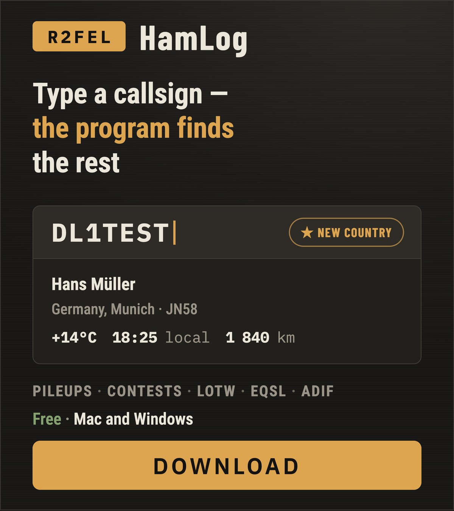
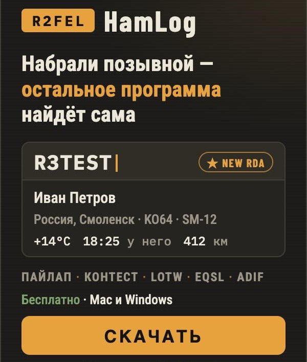
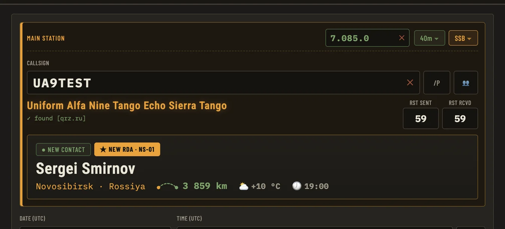
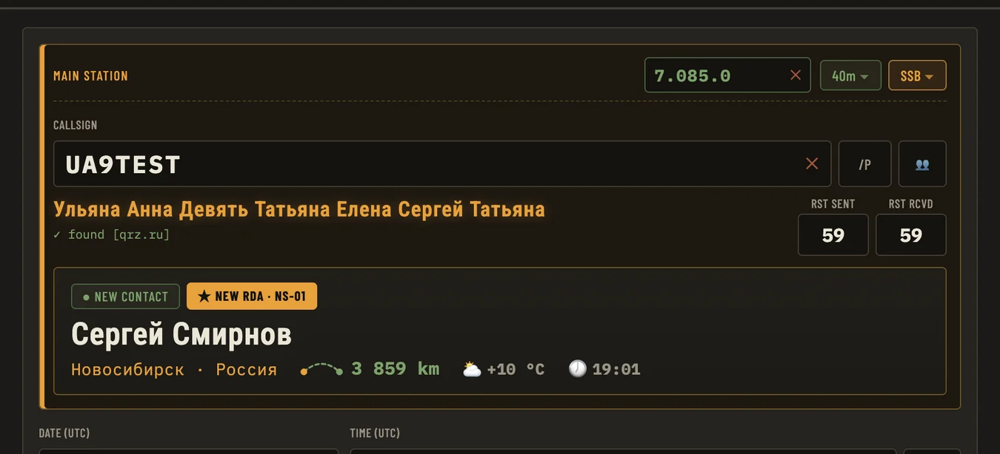

Free ham radio logbook · macOS & WindowsБесплатный аппаратный журнал · Mac и Windows
The ham radio logbook
that does the work
for youЖурнал радиосвязей,
который работает
за вас
The name, country, town, grid square and RDA district fill in by themselves. You see the distance, the weather and the local time at the other end, and at once whether you've worked them before. Имя, страна, город, локатор и район RDA подставляются сами. Видно расстояние, погоду и который час у корреспондента, и сразу понятно, работали вы с ним раньше или нет.
No subscription, no cloud: your log stays on your own computer. Без подписок и без облака: журнал лежит на вашем компьютере.




What it doesЧто умеет
Three callbooks at onceТри справочника сразу
QRZ.RU and HamQTH are asked together; QRZ.com fills in whatever neither knew. Russian stations come back with names in Russian.QRZ.RU и HamQTH спрашиваются одновременно, чего нет у них — дописывает QRZ.com. Имена российских станций — по-русски.
Weather and local timeПогода и местное время
At the other end of the contact, plus the great-circle distance.У корреспондента, и расстояние по дуге большого круга.
Duplicates at a glanceПовторы видны сразу
WORKED BEFORE with every earlier contact one click away; ★ NEW COUNTRY / RDA / BAND for firsts.WORKED BEFORE и все прошлые связи по щелчку; ★ NEW COUNTRY / RDA / BAND — когда впервые.
Pileups and contestsПайлапы и контесты
Several stations in one entry — callsign, space, next callsign. Serial numbers and Cabrillo export.Несколько станций в одной записи — позывной, пробел, следующий. Серийные номера и экспорт Cabrillo.
QSL in one placeQSL в одном месте
LoTW (through TQSL), eQSL with the cards you receive, HAMLOG, and your own QSL card by e-mail.LoTW (через TQSL), eQSL с картинками, HAMLOG и своя QSL-карточка по e-mail.
ADIF, backups, manualADIF, копии, инструкция
Import and export, an automatic copy of the log, phonetics under every field and a two-language manual (F1).Импорт и экспорт, автоматическая копия журнала, фонетика под полями и инструкция на двух языках (F1).
Video reviewВидеообзор
ByАвтор обзора — Imran Expert · open on YouTubeоткрыть на YouTube
InstallingУстановка
“Unknown developer”«Разработчик неизвестен»
The program isn't signed with a paid certificate, so the first start brings a warning.Программа не подписана платным сертификатом, поэтому при первом запуске будет предупреждение.
Mac: right-click the icon → Open.
Windows: More info → Run anyway.Mac: правый щелчок по значку → «Открыть».
Windows: «Подробнее» → «Выполнить в любом случае».
Callsign lookupПоиск позывных
Needs free XML API access at QRZ.RU and/or a free HamQTH account. The manual inside the program (F1) explains how to get both.Нужен бесплатный доступ к XML API QRZ.RU и/или бесплатный аккаунт HamQTH. Как их получить — в инструкции внутри программы (F1).
Your dataВаши данные
Nothing from your log leaves your computerНичего из журнала не уходит с компьютера
Callbooks and weather are asked only while you type a callsign. LoTW, eQSL and HAMLOG — only when you press the button. Once a day the program checks for a new version and tells the author just the country, version, system and language — no callsign, no contacts. You can switch that off in settings. This site counts visits the same way — the day, the country, where you came from — with no cookies and nothing about you personally.Справочники и погода спрашиваются, только пока вы вводите позывной. LoTW, eQSL и HAMLOG — только по нажатию кнопки. Раз в сутки программа проверяет, не вышла ли новая версия, и сообщает автору только страну, версию, систему и язык — ни позывного, ни связей. Это выключается в настройках. Сам сайт считает посещения так же обезличенно: день, страна, откуда пришли, — без cookie и без чего-либо о вас лично.